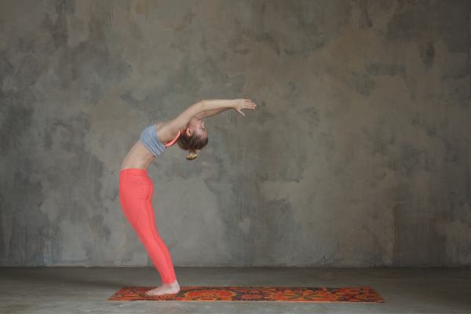
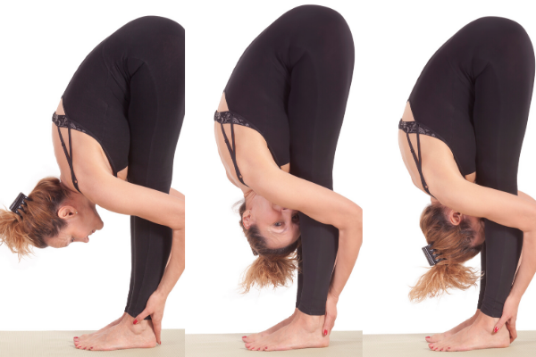
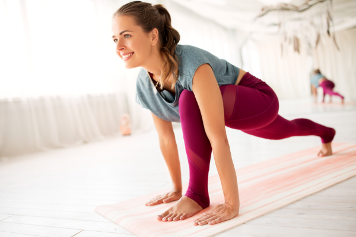
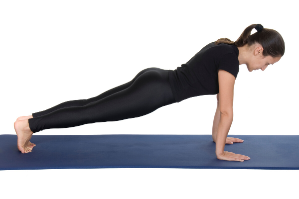
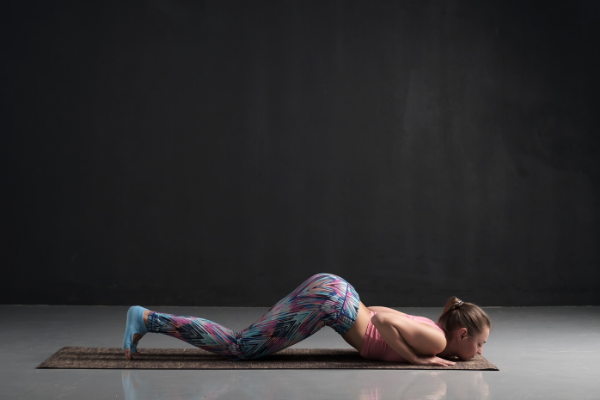
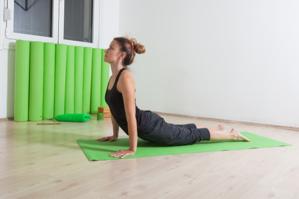
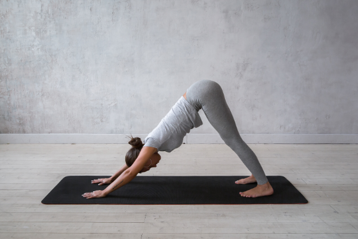
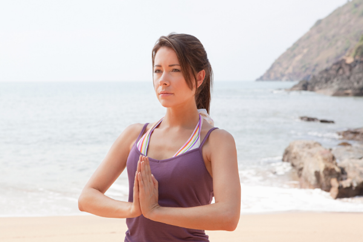

सूर्य-नमस्कार करने का सही तरीका और फायदे
कदम-1. प्रणामासन

इस आसन के लिए सबसे पहले योग मैट बिछाएं और सीधे खड़े हो जाएं। अब दोनों हाथों को जोड़ते हुए अपने सीने के करीब लाएं और नमस्कार करने की स्थिति में आ जाएं।
कदम-2. हस्तउत्तानासन
अब गहरी सांस लेते हुए हाथों को जोड़कर सिर के ऊपर उठाएं। ध्यान रहे कि इस स्थिति में दोनों भुजाएं कानों को छूती रहें। अब कमर से नीचे के हिस्से को सीधे रखते हुए जितना हो सके शरीर के ऊपरी हिस्से को पीछे की ओर ले जाने का प्रयास करें।
कदम-3. पादहस्तासन
सांस छोड़ते हुए अब धीरे-धीरे दोनों हाथों को आगे लाते हुए पेट के बल आगे की ओर झुकें और दोनों हाथों को जमीन पर लगाने का प्रयास करें। ध्यान रहे कि इस स्थिति में माथे का पैरों के घुटनों से स्पर्श होना चाहिए।
कदम-4. अश्व संचालनासन
अब सांस लेते हुए अपने बाएं पैर पर बैठते हुए दाएं पैर को जितना हो सके पीछे की ओर जमीन पर ले जाते हुए रखना है। ध्यान रहे कि इस स्थिति में दाएं पैर के घुटना का स्पर्श जमीन से होना चाहिए। इस मुद्रा में रहते हुए गर्दन से ऊपर की ओर देखें।
कदम-5. पर्वतासन
इस आसन में सांस छोड़ते हुए बाएं पैर को भी पीछे की ओर ले जाना होगा। बाएं और दाएं पैर के पंजों के समानांतर आने के बाद शरीर को बीच से उठाने की कोशिश करें। इस दौरान हथेलियों और पंजे जमीन से सटे हों। ध्यान रहे कि इस स्थिति में हाथ और पैर सीधे रहें।
कदम-6. अष्टांगासन
अब पर्वतासन से अष्टांगासन में आने के लिए सबसे पहले गहरी सांस लेनी होगी। इसके बाद दोनों घुटनों को जमीन से लगा लें। अब बिना सांस छोड़े सीने व ठुड्डी से जमीन का स्पर्श करें। इस मुद्रा में कमर और कुल्हे ऊपर आसमान की ओर उठे होंगे।
कदम-7. भुजंगासन
इस आसन में अब बिना सांस छोड़े कमर तक के हिस्से को जमीन से सटा लें। फिर कमर से ऊपर के हिस्से को उठाने की कोशिश करें। इस स्थिति में हथेलियां जमीन से सटी होनी चाहिए और गर्दन को ऊपर की ओर करके आसमान की तरफ देखें।
कदम-8. पर्वतासन
अब दोबारा पर्वतासन में आना होगा। इसके लिए सांस छोड़ते हुए शरीर के बीच के हिस्से को ऊपर उठाने की कोशिश करें। ध्यान रहे कि इस आसन को करते समय दोनों हाथ सीधे रहें और एडियों का स्पर्श जमीन से हो। साथ ही नाभि की तरफ देखने का प्रयास करें।
कदम-9. अश्व संचालनासन
फिर गहरी सांस लेते हुए अपने दाएं पैर को आगे की ओर लाकर उस पर बैठ जाएं। वहीं, बाएं पैर को सीधा रखें और घुटने को जमीन से स्पर्श कराएं।
कदम-10. पादहस्तासन
इसके बाद सांस छोड़ते हुए अपने बाएं पैर को आगे की ओर लाएं। अब अपने हाथों को जमीन से सटाएते हुए पैरों को सीधा करें और माथे को घुटनों से छूने की कोशिश करें।
कदम-11. हस्तउत्तानासन
अब गहरी सांस लेते हुए हाथों को ऊपर की ओर उठाएं और हथेलियों को आपस में जोड़ते हुए जितना हो सके पीछे की ओर झुकने की कोशिश करें।
कदम-12. प्रणाम आसन
अंत में पुनः प्रणाम आसन में आना है। इसके लिए बिल्कुल सीधे होकर हाथों को जोड़ते हुए नमस्कार मुद्रा में आ जाएं।
लाभ
वजन कम करने में मदद करता है। पाचन और भूख में सुधार करता है। शरीर को लचीला बनाता है। कब्ज की समस्या को ठीक करने में कारगर है। शारीरिक और मानसिक मजबूती बढ़ाता है। बॉडी पोस्चर को बेहतर करता है और बैलेंस बनाने में मदद करता है। मसल्स को टोन करता है3 और हड्डियों को मजबूत करता है। बाजू, कंधों, कमर, पैर, क्वैड्स, काफ़्स और हिप्स की मांसपेशियों को टोन करता है।